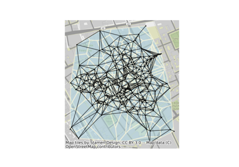
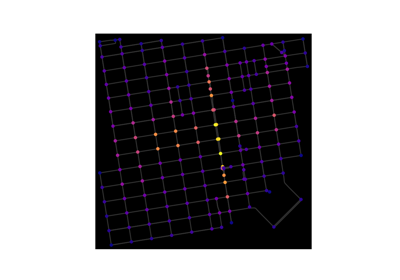

Geospatial#
The following geospatial examples showcase different ways of performing network analyses using packages within the geospatial Python ecosystem. Example spatial files are stored directly in this directory. See the extended description for more details.

Delaunay graphs from geographic points
Delaunay graphs from geographic points


OpenStreetMap with OSMnx